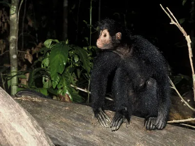

Black Spider Monkey

Roger Leguen / WWF-Canon
The black spider monkey—also known as the Guiana or red-faced spider monkey—is found in eastern South America in areas north of the Amazon River. They are one of seven species of spider monkeys found in Latin America and one of the largest primate species in South America.